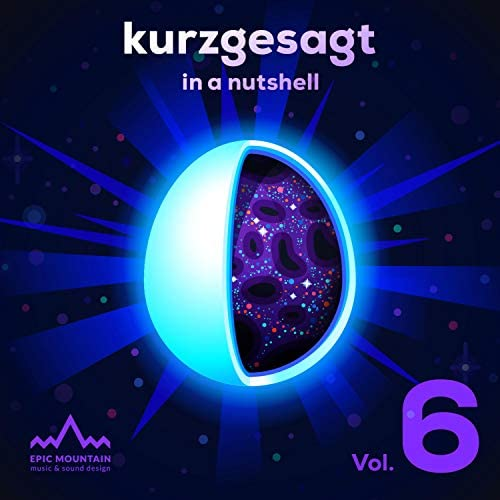

Accueil
La sphère de Dyson
Échelle de Kardashev
Trou noir
Trou blanc
Trou de ver
Bibliographie
Bibliographie
Sources
Wikipedia
Toutes les vidéos ont été extraites de la chaîne Youtube Kurzgesagt ci-dessous :
